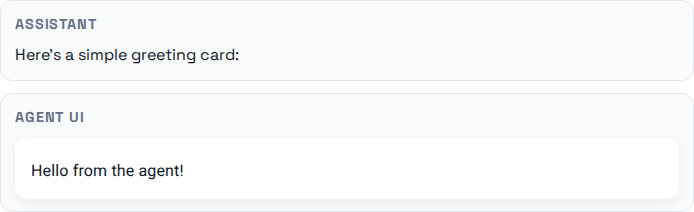

THE FRONT PAGE
EDITOR'S NOTE: The quiet consolidation of foundational tools reveals how easily craft is traded for convenience—yet the gaps left behind still demand attention. #the erosion of engineering autonomy under AI-driven infrastructure
A new release of Kitten text-to-speech models—now under **25MB**—pushes edge-device deployment further, but early adopters report tradeoffs in voice naturalness at extreme compression. The smallest variant, while 10x lighter than commercial alternatives, reportedly struggles with prosodic subtleties in low-resource languages, a reminder that 'small' and 'good' still negotiate.
The Noq implementation moves QUIC into the Rust ecosystem to bypass the memory hazards of legacy C stacks, though it risks fragmentation in a protocol landscape already burdened by over-specification. It represents a pivot back toward disciplined systems engineering at the expense of established, battle-tested library interoperability.

Fabian Kuebler’s experiment repurposes Markdown as a generative UI protocol, trading syntactic simplicity for dynamic layout control—a move that could either streamline agentic workflows or drown them in edge-case sprawl. The real test isn’t technical, but whether developers will tolerate another layer of abstraction in their stacks.
The NanoGPT Slowrun demonstrates a 10x data efficiency gain by trading cycles for precision, yet this optimization highlights the risk of overfitting to synthetic benchmarks while actual architectural variety withers. It suggests a future where compute is no longer the bottleneck, but the scarcity of high-quality, non-recursive data is.
Engineers are revisiting 8-bit conversion tables to bridge the gaps between aging legacy data and modern architectures, highlighting a quiet crisis in software durability. While these interactive tools offer a necessary map, they also risk entrenching brittle dependencies that favor immediate compatibility over the harder work of full system modernization.
MODEL RELEASE HISTORY
No confirmed model releases were detected for this edition date.